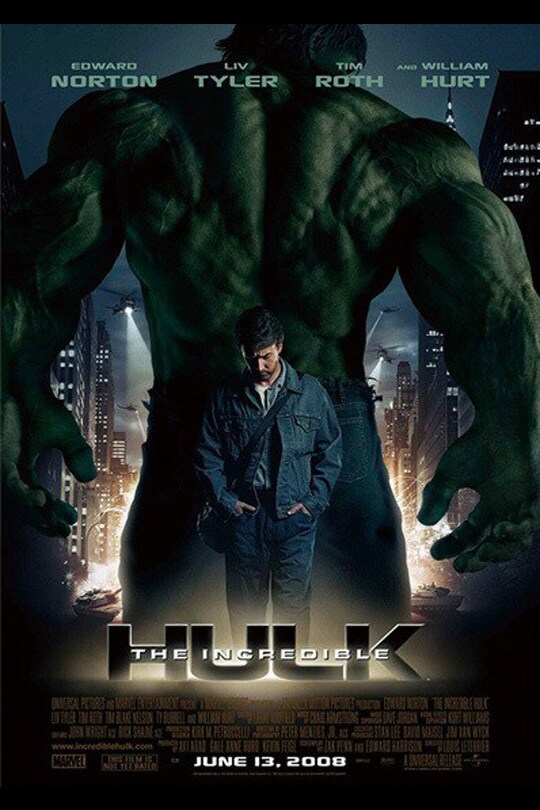
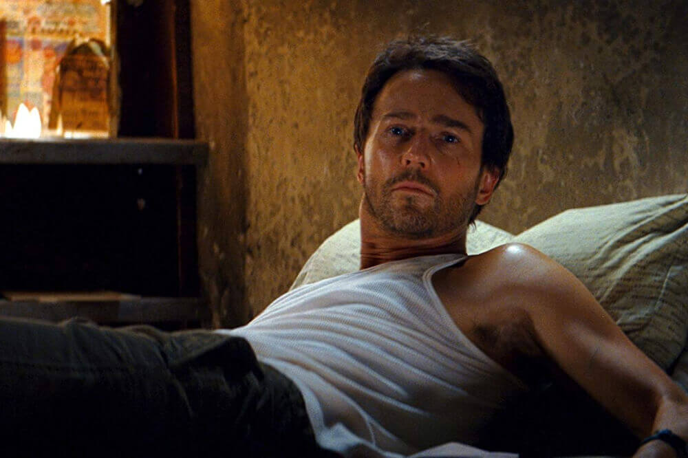
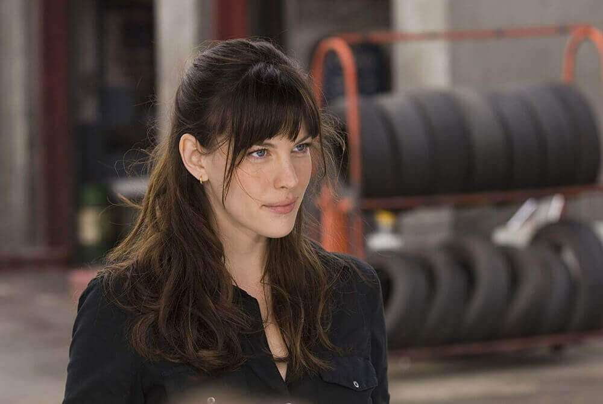
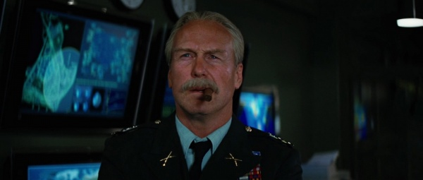
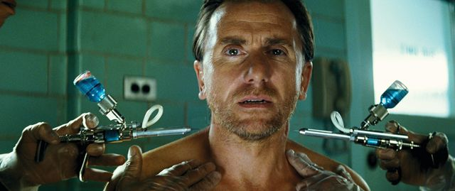

ブルース・バナー / ハルク
逃亡中の天才科学者 // 緑の巨人
元軍の細胞解明・放射線抵抗の研究者。実験事故で多量のガンマ線を浴び、怒りで心拍数が200を超えると圧倒的な破壊衝動を持つ巨躯のモンスター「ハルク」に変身する体質となる。
「僕を怒らせない方がいい」

ベティ・ロス
細胞生物学者 / ブルースの恋人
ブルースと共に研究を行っていた科学者であり、ロス将軍の娘。逃亡を続けるブルースと再会し、彼の苦悩に寄り添いながら治療薬の開発と逃避行をサポートする。
「私が見たのはモンスターじゃないわ。彼が窮地から救ってくれたの。」

サディアス・“サンダーボルト”・ロス将軍
米陸軍将軍 / 生体兵器計画の指揮官
かつて第二次世界大戦期の「超人兵士計画」を再現しようとブルースに研究を行わせた張本人。ハルクの強大な肉体を“アメリカ政府の所有物”と見なし、執念深くブルースを追いつめる。
「私に関する限り、バナーの身体の全組織はアメリカ政府の所有物だ！」

エミル・ブロンスキー / アボミネーション
精鋭特殊部隊員 // 異形の怪物
ロス将軍に雇われた最強の戦士。ハルクの圧倒的なパワーに魅了され、超人血清の投与を志願。さらにはバナーの血液（ガンマ線）を取り込み、ハルクをも凌駕する醜悪な巨人「アボミネーション」へと変貌する。
「もっと若い時に打ちたかった。」